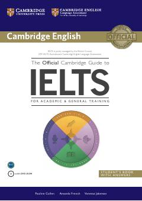

TOIELTS imtihoniga tayyorlanish uchun eng mukammal va rasmiy qo'llanma.
Ushbu qo'llanma IELTS imtihoniga tayyorlanayotganlar uchun Cambridge English tomonidan ishlab chiqilgan rasmiy resurs hisoblanadi. Kitobda o'qish, yozish, tinglash va gapirish ko'nikmalarini rivojlantirish bo'yicha amaliy maslahatlar hamda 8 ta rasmiy amaliy test mavjud.